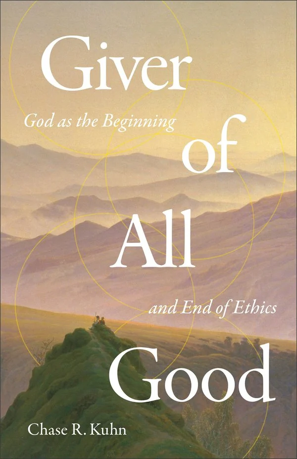

Baker Books · New release
Giver of All Good
God as the Beginning and End of Ethics
Baker Books · Christian Ethics
Releases October 27, 2026 · ISBN 9781540906076
About the book
Kuhn argues that Christian ethics begins with the character of God as revealed in Scripture, and builds his account on the work of the Father, Son and Spirit. He teaches at Moore College, and the book asks where ethics comes from and what sets Christian ethics apart.
← Back to the Theology Shelf Get the weekly email
Disclosure: The Picky Reader may earn a commission from purchases made through our links, at no extra cost to you.